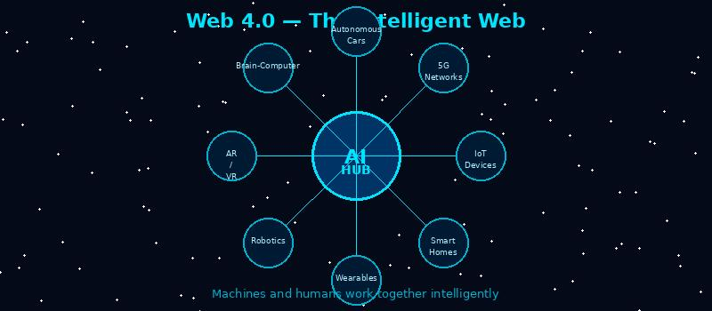

What is Web 4.0?

Web 4.0 represents the future intelligent web, where machines can understand human emotions, context, and intent. It's sometimes called the "symbiotic web" because it aims for seamless human-computer interaction.
Web 4.0 combines artificial intelligence, Internet of Things (IoT), voice recognition, and real-time data processing.
Key features:
- AI that understands emotions and context (affective computing)
- Ubiquitous computing (connected devices everywhere)
- Voice and gesture-based interaction
- Real-time, personalized experiences
- Examples: Smart homes, advanced virtual assistants, brain-computer interfaces